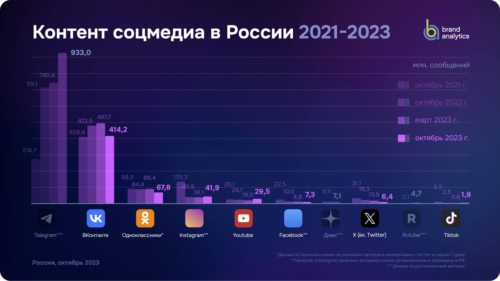

Что такое социальная сеть
 Социальная сеть (сокр. соцсеть, SNS от social networking service)
Социальная сеть (сокр. соцсеть, SNS от social networking service) — онлайн-платформа, которая используется для общения, знакомств, создания социальных отношений между людьми, которые имеют схожие интересы или офлайн-связи, а также для развлечения (музыка, фильмы) и работы.
Как прмер можно рассмотреть социальную сеть ВКонтакте, так как многие другие сети просто недоступны для использования в РФ (Instagram, twitter, facebook, snapchat, pinterest и другие).
Сайт доступен на 82 языках, но особенно популярен среди русскоязычных пользователей.
«ВКонтакте» позволяет пользователям отправлять друг другу сообщения, создавать собственные страницы и сообщества, обмениваться фотографиями, музыкой и видео, переводить деньги, играть в игры и не только. Также предоставляет возможность продвигать свой бизнес и решать повседневные задачи с помощью мини-приложений.

На графиках динамики в дополнение к данным по авторам и контенту в соцсетях в России представлены данные по русскоязычному Telegram без привязки к географии – в данных этой платформы нет информации о географии сообщений. Инфографика позволяет провести условное сравнение всех представленных социальных платформ. По Дзену и Rutube представлены данные только за октябрь и март 2023 года.
Если смотреть на годовую динамику по отношению к октябрю 2022 года, то число авторов выросло только у Telegram (+33%) и Youtube (+18%). При этом у Telegram снижаются темпы роста. А Youtube вырос впервые с 2021 года.
По объему контента положительная годовая динамика у Telegram (+31%), YouTube (+22%) и у Instagram** (+4%), учитывая то, что социальная сеть запрещена в РФ. Переломный тренд по году у ВКонтакте – месячный объем контента в соцсети снизился (-12%).